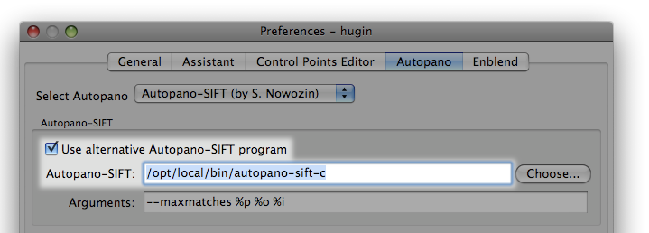
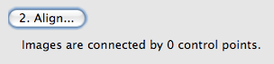
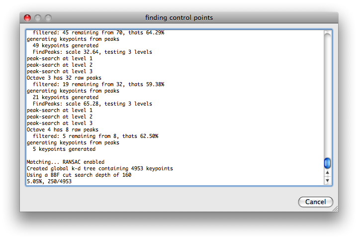
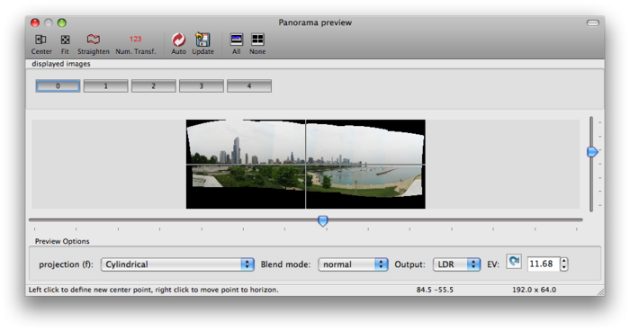

Autopano-sift-C
autopano-sift-C can be used to find control points in overlapping image pairs and is a C port of the C# software autopano-sift. It is somewhat faster and doesn't require a C# runtime - Installing the mono C# runtime on OS X has proved to be problematic on some systems.
Additionally, autopano-sift-C has experimental modifications to perform feature identification in conformal image space, this helps with wide angle or fisheye Projection photographs.
autopano-sift-C is available from the hugin project and can only be used within hugin as an optional installation due to patent issues: the use of the Scale-invariant feature transform[*] algorithm is restricted by US Patent 6,711,293, awarded March 23, 2004 to the University of British Columbia.
The current version 2.5.1 (autopano-sift-C-2.5.1) is available since the release of hugin 0.7 in October 2008.
Installation on Mac OS X
On Mac OS X, autopano-sift-c can be installed via MacPorts:
$ sudo port install autopano-sift-c
This may take some minutes to fetch and compile the required software. Once complete, the autopano-sift-c binary will be installed in /opt/local/bin.
To get Hugin to use it, you may need to add this full path into the preferences:
[*]
![[*]](http://wiki.panotools.org/File:Autopano-prefs.png){kind=link}
Now you're ready to use the control point alignment assistant in Hugin. Load up your images, then hit the 'Align' button:
- [*]
![[*]](http://wiki.panotools.org/File:Autopano-align.png){kind=link}
At this point you'll either see a big fat error dialog, or if everything's working you'll see a dialog like this while autopano-sift-c does its thing. This may take a few minutes...
[*]
![[*]](http://wiki.panotools.org/File:Autopano-searching.png){kind=link}
When it's done, Hugin's panorama preview should show you something decent now!
[*]
![[*]](http://wiki.panotools.org/File:Autopano-done.png){kind=link}
You'll probably still want to nudge some things or run the exposure optimizer, but this'll have saved a lot of time manually setting control points.